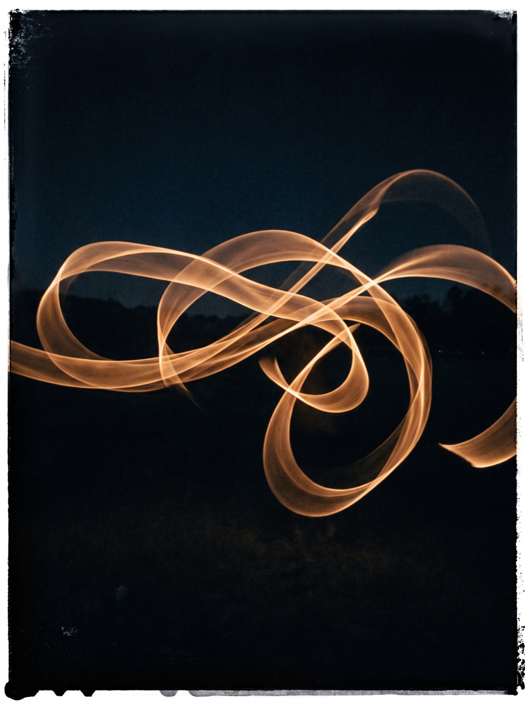
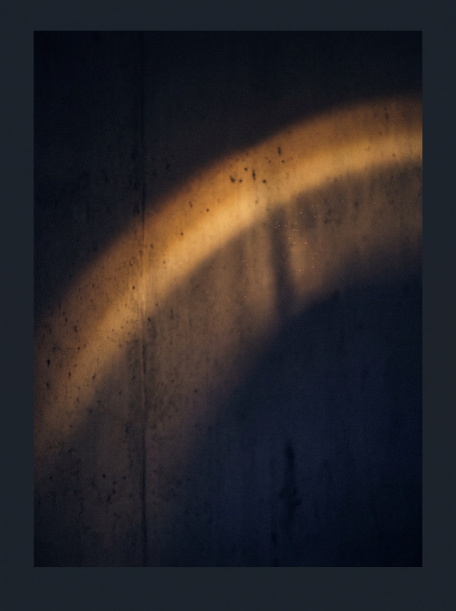
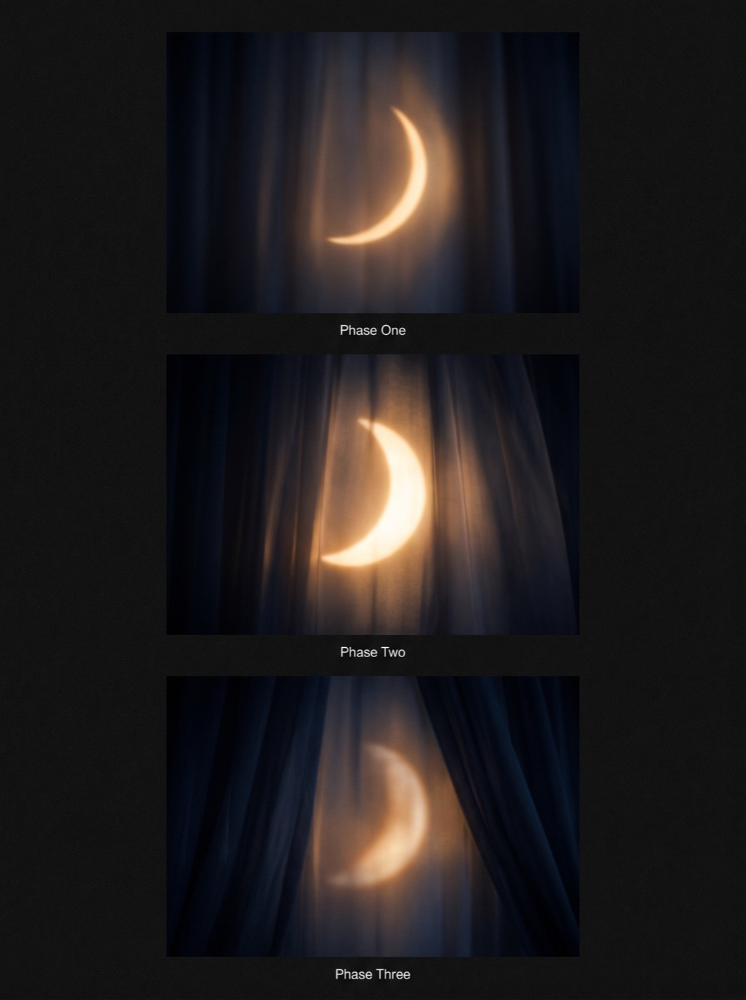
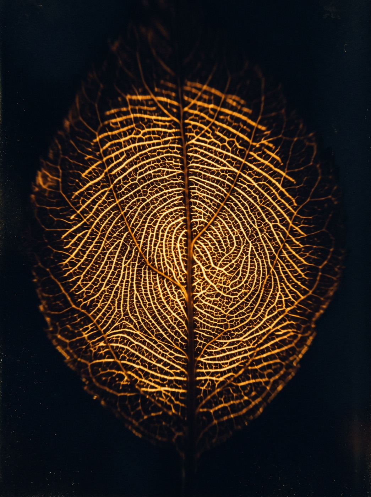

L'alimentation
Ce que tu mets dans ton assiette parle directement à tes hormones et à ton système nerveux.
Formation en ligne sur la périménopause
La formation en ligne qui t'apprend à lire ce que ton corps te dit en périménopause : comprendre tes symptômes, retrouver ton énergie et reprendre de l'emprise sur tes hormones, un pilier à la fois.
Découvrir le parcours30+ leçons en ligne · À ton rythme · Accès à vie
Tu manges bien. Tu bouges. Et pourtant, une prise de poids que rien n'explique.
Le stress te rentre dedans. L'anxiété est devenue la trame de fond de tes journées.
Tu te réveilles déjà fatiguée.
Beaucoup de femmes vivent ces changements à partir de 35 ans. Souvent les trois en même temps. Ça porte un nom : la périménopause.
C'est incomplet, et c'est décourageant. Parce que tes hormones ne travaillent pas dans le vide : elles répondent à ton sommeil, ton alimentation, ton système nerveux, ta lumière, ton mouvement. Et ces choses-là, c'est toi qui les construis, chaque jour.
Regarde l'horizon.
Ce sont ces choses-là que tu peux influencer.
Chaque leçon t'explique un mécanisme concret, puis te propose un exercice d'observation. Tu n'apprends pas quoi faire. Tu apprends à voir ce que ton corps te dit déjà.
Ce que tu mets dans ton assiette parle directement à tes hormones et à ton système nerveux.
Pas seulement dormir, mais accéder à un véritable état de régénération.
La base de tout. En mode survie, ton corps ne fait pas de l'équilibre hormonal une priorité.

La façon dont tu bouges, pas seulement combien tu dépenses.

Ton horloge interne, qui orchestre tout le reste sur 24 heures.

Ton rythme propre, que la plupart des femmes apprennent à ignorer plutôt qu'à utiliser.

Tes minéraux, tes hormones, la vitesse de ton métabolisme. C'est la clé de la personnalisation.
Tes symptômes sont des signaux. Chacun pointe vers un de ces piliers, vers un endroit que tu n'as pas encore identifié.
Qu'est-ce que mon corps essaie de me dire ?
30+ leçons, organisées autour des sept piliers
Leçons en texte, entre 10 et 15 minutes chacune
Accès à vie, tout disponible dès l'inscription
Pour toi si
Tu veux comprendre ce qui se passe dans ton corps, pas seulement recevoir des consignes
Tu as essayé des choses qui fonctionnaient pour d'autres, sans résultat pour toi
Tu cherches une base solide avant une consultation, ou entre deux
Pas pour toi si
Tu cherches un protocole précis à suivre à la lettre, ou une solution rapide : ce parcours demande de l'observation avant l'action
Tu vis des symptômes intenses ou inquiétants : commence par consulter
Ce n'est pas un protocole, et ça ne remplace pas un suivi personnalisé. L'autonomie ne remplace pas l'accompagnement. Elle le rend plus puissant.
Prix : à venir
Entrer dans ta zone de pouvoirAccès à vie, tout disponible dès l'inscription.